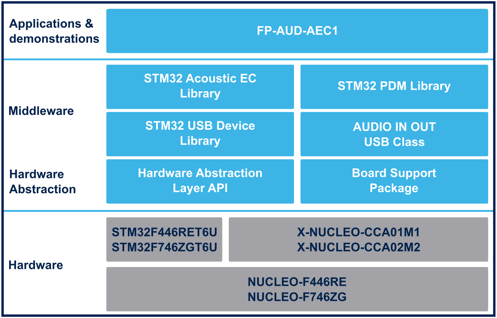

Release Notes for FP-AUD-AEC1
Copyright © 2022 STMicroelectronics
Purpose
FP-AUD-AEC1 STM32Cube Function Pack for Acoustic Echo Cancellation is a specific example fully focused on Acoustic Echo Cancellation and provides an implementation of a USB smart speaker use case with microphone
The package includes the STM32 AcousticEC library,that provides an implementation for a real-time echo cancellation routine based on the well-known SPEEX implementation of the MDF algorithm.
The firmware provides implementation example for NUCLEO-F446RE board or NUCLEO-F746ZG equipped with:
- X-NUCLEO-CCA01M1, an expansion board based on the STA350BW Sound Terminal® 2.1-channel high-efficiency digital audio output system.
- X-NUCLEO-CCA02M2, an evaluation board based on digital MEMS microphones, designed around STMicroelectronics MP34DT06J digital microphones.

Here is the list of references to user documents:
Update History
Main Changes
Maintenance release
Additional features
| Headline |
|---|
| Updated STM32 HAL, Driver and middlewares |
| Updated AcousticEC library |
| Code cleaning and licensing refactoring |
Contents
The components flagged by “” have changed since the previous release. “” are new.
Documentation
| Name | Version | Document |
|---|---|---|
| Doxygen documentation | 1.2.0 | CHM |
Projects
| Name | Version | Document |
|---|---|---|
| STM32F446RE-Nucleo/AEC | 1.2.0 | Read Me |
| STM32F746ZG-Nucleo/AEC | 1.2.0 | Read Me |
Middlewares
| Name | Version | Document |
|---|---|---|
| STM32 AcousticEC Library | 3.1.0 | Release notes |
| STM32 Audio PDM Library | 3.3.0 | Release notes |
| STM32 USB Device Library | 2.10.0 | Release notes |
| STM32 AUDIO IN OUT USB Device Class | 2.10.0MOD | Release notes |
Drivers
| Name | Version | Document |
|---|---|---|
| BSP CCA01M1 | 3.1.0 | Release notes |
| BSP CCA02M2 | 1.1.2 | Release notes |
| STM32F4xx CMSIS | 2.6.8 | Release notes |
| STM32F7xx CMSIS | 1.2.6 | Release notes |
| STM32F4xx HAL | 1.8.0 | Release notes |
| STM32F7xx HAL | 1.2.9 | Release notes |
Components
| Name | Version | Document |
|---|---|---|
| Common | 7.2.1 | Release notes |
| sta350bw | 3.0.0 | Release notes |
Known Limitations
- None
Development Toolchains and Compilers
- IAR Embedded Workbench for ARM (EWARM) toolchain V9.20.1
- RealView Microcontroller Development Kit (MDK-ARM) toolchain V5.37
- STM32CubeIDE v1.10.1
Supported Devices and Boards
- STM32F446RE and STM32F746ZG devices
- NUCLEO-F446RE Rev C
- NUCLEO-F746ZG Rev B
- X-NUCLEO-CCA01M1
- X-NUCLEO-CCA02M2
Backward Compatibility
- To optimize memory footprint and MCU time consumption, from v1.1.0 the application has been redesigned to acquire the audio signal from only 1 microphone. To do so, a different HW configuration for X-NUCLEO-CCA02M2 is needed, as described in UM2824 (v1.1 and above).
Dependencies
- None
Main Changes
Maintenance release and product update
- Updated STM32 HAL, Driver and middlewares
- Updated AcousticEC library: now released in source code
- Issue solved: periodic-pattern noise in the filtered signal
- Deleted usbd_core_Patch from application: patch included in STM32 USB Device Library
- Code cleaning and refactoring: now it works acquiring only signal from 1 microphone
Contents
The components flagged by “” have changed since the previous release. “” are new.
Documentation
| Name | Version |
|---|---|
| Doxygen documentation | 1.1.0 |
Projects
| Name | Version |
|---|---|
| STM32F446RE-Nucleo/AEC | 1.1.0 |
| STM32F746ZG-Nucleo/AEC | 1.1.0 |
Middlewares
| Name | Version |
|---|---|
| STM32 AcousticEC Library | 3.0.0 |
| STM32 Audio PDM Library | 3.3.0 |
| STM32 USB Device Library | 2.7.1 |
| STM32 AUDIO IN OUT USB Device Class | 2.4.2MOD |
Drivers
| Name | Version |
|---|---|
| STM32F4xx CMSIS | 2.6.6 |
| STM32F7xx CMSIS | 1.2.6 |
| STM32F4xx HAL | 1.7.12 |
| STM32F7xx HAL | 1.2.9 |
| BSP X-NUCLEO-CCA02M2 | 1.1.1 |
| BSP X-NUCLEO-CCA01M1 | 3.0.2 |
Components
| Name | Version |
|---|---|
| Common | 6.0.0 |
| sta350bw | 3.0.0 |
Known Limitations
- None
Development Toolchains and Compilers
- IAR Embedded Workbench for ARM (EWARM) toolchain V8.50.9
- RealView Microcontroller Development Kit (MDK-ARM) toolchain V5.32
- STM32CubeIDE v1.7.0
Supported Devices and Boards
- STM32F446RE and STM32F746ZG devices
- NUCLEO-F446RE Rev C
- NUCLEO-F746ZG Rev B
- X-NUCLEO-CCA01M1
- X-NUCLEO-CCA02M2
Backward Compatibility
- To optimize memory footprint and MCU time consumption, v1.1.0 has been redesigned to acquire the audio signal from only 1 microphone. To do so, a different HW configuration for X-NUCLEO-CCA02M2 is needed, as described in UM2824 (v1.1 and above).
Dependencies
- None
Main Changes
First official release
- Main features of FP-AUD-AEC1:
- Specific example fully focused on Acoustic Echo Cancellation
- Provide an implementation of a USB smart speaker use case with microphone
- Based on AcousticEC library features
- Support audio in/out streaming via USB through a dedicated USB AUDIO class
Contents
The components flagged by “” have changed since the previous release. “” are new.
Documentation
| Name | Version |
|---|---|
| Doxygen documentation | 1.0.0 |
Projects
| Name | Version |
|---|---|
| STM32F446RE-Nucleo/AEC | 1.0.0 |
| STM32F746ZG-Nucleo/AEC | 1.0.0 |
Middlewares
| Name | Version |
|---|---|
| STM32 AcousticEC Library | 2.3.0 |
| STM32 Audio PDM Library | 3.2.0MOD |
| STM32 SRC236 | 1.0.4 |
| STM32 USB Device Library | 2.6.0 |
| STM32 AUDIO IN OUT USB Device Class | 2.4.2MOD |
Drivers
| Name | Version |
|---|---|
| STM32F4xx CMSIS | 2.6.5 |
| STM32F7xx CMSIS | 1.2.5 |
| STM32F4xx HAL | 1.7.10 |
| STM32F7xx HAL | 1.2.8 |
| BSP X-NUCLEO-CCA02M2 | 1.1.1 |
| BSP X-NUCLEO-CCA01M1 | 3.0.2 |
Components
| Name | Version |
|---|---|
| Common | 6.0.0 |
| sta350bw | 3.0.0 |
Important Software Additional Information
- A patch for usbd_core.c file is needed to handle iso in and out incomplete event callback invoked by the AUDIO IN OUT class. The patch (usbd_core_Patch.c), located in user-space (Demonstrations/AEC/Patch), replaces the original file which have been disabled, allowing the whole software structure to work flawlessly.
Known Limitations
- None
Development Toolchains and Compilers
- IAR Embedded Workbench for ARM (EWARM) toolchain V8.50.5
- RealView Microcontroller Development Kit (MDK-ARM) toolchain V5.31.0
- STM32CubeIDE v1.4.2
Supported Devices and Boards
- STM32F446RE and STM32F746ZG devices
- NUCLEO-F446RE Rev C
- NUCLEO-F746ZG Rev B
- X-NUCLEO-CCA01M1
- X-NUCLEO-CCA02M2
Backward Compatibility
- None
Dependencies
- None